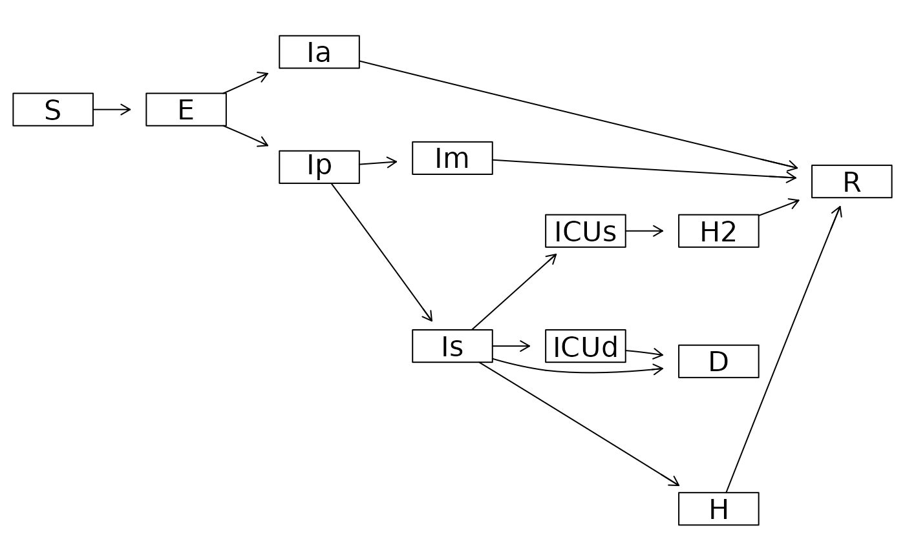

Convert a compartmental model specification into a graph (using the graph
package) of the box diagram for the model.
Usage
mp_dot_layout(
spec,
include_inout = FALSE,
action = c("render", "layout", "define"),
define_args = list(edgemode = "directed"),
layout_args = list(attrs = list(graph = list(rankdir = "LR"), node = list(shape =
"rectangle"))),
render_args = list(edgemode = "directed")
)
dot_layout(spec, include_inout = FALSE)Arguments
- spec
A model specification object (for example, created using
mp_tmb_model_spec()).- include_inout
(logical) include nodes defined by
mp_per_capita_inflowandmp_per_capita_outflow?- action
What actions should be taken? The default,
"render", will define, layout, and render the graph of the modelspec. Rendering means that the graph will be rendered in the current graphics device and that the returned object will contain both layout and rendering information (seelayoutGraphrenderGraph). Ifactionis"layout", then the graph will not be rendered, but the returned object will contain layout information and can therefore be rendered later using therenderGraphfunction. Ifactionis"define", then the returned object will contain the definition of the graph but not any layout or rendering information.- define_args
List of additional arguments to pass to the
graphAMconstructor function.- layout_args
List of additional arguments to pass to the
layoutGraphfunction (only applied ifactionis either"layout"or"render").- render_args
List of additional arguments to pass to the
renderGraphfunction (only applied ifactionis"render").
Value
A graphAM object.
Details
In order to create these graph objects you need to install the graph
package, and to plot them on the current graphics device you need to
install the Rgraphviz package.
Functions
dot_layout(): Deprecated in favour ofmp_dot_layout, which both plots and returns thegraphAMobject.
Examples
("macpan_base"
|> mp_official_library()
|> mp_dot_layout()
)

#> A graphAM graph with directed edges
#> Number of Nodes = 12
#> Number of Edges = 15